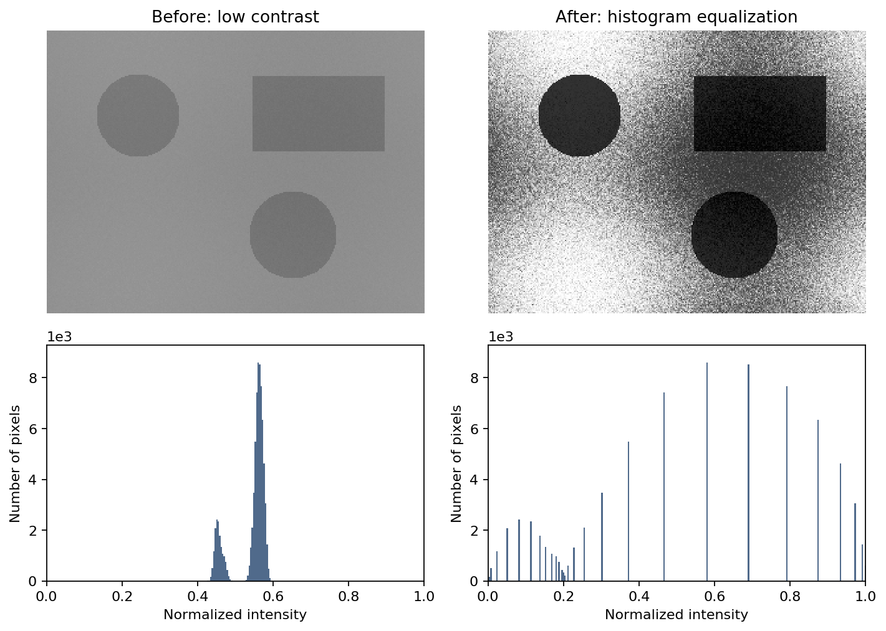

Binarizarea imaginilor: metoda Otsu
Laboratorul 5, DEPI
1 Obiectiv
Citirea și afișarea imaginilor în tonuri de gri în Matlab, interpretarea histogramelor, și implementarea binarizării imaginilor prin metoda Otsu pe baza varianțelor grupurilor.
2 Aspecte teoretice
2.1 O imagine în tonuri de gri este o matrice
O imagine digitală este o matrice de pixeli. O imagine în tonuri de gri stochează câte o valoare a intensității pentru fiecare pixel, într-o matrice I:
I(r,c)este pixelul de pe liniar, coloanac.- Valori mici corespund pixelilor întunecați, iar cele mari pixelilor luminoși.
- Pentru o imagine pe 8 biți, stocată ca
uint8, pixelii sunt numere întregi de la 0 (negru) la 255 (alb). - Dacă imaginea este stocată ca
double, pixelii sunt numere reale, fie în intervalul 0–255, fie în intervalul 0–1.
În acest laborator, preferăm valori ale pixelilor în intervalul 0–1, de tip double, pentru a putea efectua calcule precise.
De exemplu, aceasta este o imagine mică în tonuri de gri:
I_small = [0 0.25 0.5 1; 0 0.25 0.5 1; 0 0.25 0.5 1];
figure
imshow(I_small)În exemplul de mai jos:
imread()citește o imagine dintr-un fișier;im2double()convertește o imagine cu valori întregi la tipuldoubleși îi rescalează intensitățile în intervalul 0–1;size(I)întoarce numărul de linii și de coloane (ca pentru orice matrice Matlab);imshow()afișează imaginea.
Iraw = imread('coins.png');
I = im2double(Iraw);
size(I)
figure
imshow(I)Imaginile folosite în acest laborator sunt deja în tonuri de gri, deci nu este necesară conversia culorilor. O imagine color RGB ar avea trei canale, și poate fi convertită în tonuri de gri cu rgb2gray().
Pentru imaginile pe 8 biți din acest laborator, im2double(Iraw) este echivalent cu double(Iraw)/255. Valoarea 0 reprezintă negrul, iar 1 reprezintă albul. Conversia folosește întreaga scară de intensități pe 8 biți, nu cea mai mică și cea mai mare valoare prezente efectiv în imagine; acestea nu devin neapărat 0 și 1.
Conversia nu înseamnă doar schimbarea tipului: double(Iraw) păstrează intensitățile pe 8 biți pe scara 0–255. De asemenea, im2double() nu rescalează un argument care este deja double; convertiți direct imaginea originală cu valori întregi.
De acum înainte, folosiți imaginea normalizată I atât pentru afișare, cât și pentru calcule. imshow(I) folosește intervalul 0–1 pentru o imagine double; nu este necesar un argument suplimentar pentru intervalul de afișare. Consultați documentația im2double.
2.2 De la pixeli la histogramă
Histograma imaginii numără câți pixeli au fiecare intensitate și arată distribuția intensităților.
Folosiți imhist() direct pe imagine pentru a afișa histograma intensităților:
figure
imhist(I)
xlabel('Intensitate')
ylabel('Număr de pixeli')Pentru o imagine în tonuri de gri, imhist(I) folosește implicit 256 de intervale. Pentru imaginea noastră normalizată, de tip double, pozițiile intervalelor acoperă domeniul 0–1. Folosiți imhist(I,256) pentru a specifica explicit acest număr de intervale la compararea imaginilor. Spre deosebire de o histogramă normalizată ca densitate de probabilitate, acest grafic arată numărul de pixeli. Consultați documentația imhist.
Pentru calculul pragurilor, I(:) reunește toți pixelii într-un singur vector coloană, fără a le schimba tipul sau scara intensităților:
pixels = I(:);Două zone de concentrare a intensităților pot sugera două grupuri, de exemplu regiuni întunecate și luminoase. Histograma numără intensitățile, dar nu descrie pozițiile pixelilor în imagine.

Fotografie: Lav Varshney (CC0), prin setul de date camera din scikit-image. Figura comparativă: exemplul de binarizare din scikit-image. Această ilustrație externă folosește valori pe 8 biți, pe scara 0–255; împărțiți aceste intensități și pragul la 255 pentru a le exprima pe scara 0–1 folosită aici. Imaginea binară separă pixelii întunecați de cei luminoși, nu neapărat întreaga persoană de fundal.
2.3 Observație: egalizarea histogramei
O imagine ale cărei intensități ocupă doar o porțiune îngustă din intervalul 0–1 poate avea un contrast redus. Egalizarea histogramei transformă intensitățile pe baza histogramei cumulative (fracțiunea de pixeli cu intensitatea mai mică sau egală cu fiecare valoare, ca în cazul FR din Laboratorul 2). Valorile frecvente sunt distribuite într-un interval mai larg, fără schimbarea pozițiilor pixelilor. Este o metodă de îmbunătățire a contrastului, nu de binarizare sau de eliminare a zgomotului, și nu este o prelucrare preliminară obligatorie pentru metoda Otsu.
Ieq = histeq(I,256);Rezultatul are aceeași dimensiune și același tip ca I, cu intensități tot în intervalul 0–1. Comparați imshow(I) cu imshow(Ieq) și imhist(I,256) cu imhist(Ieq,256). Histograma nu devine neapărat perfect uniformă: pixelii cu aceeași intensitate inițială primesc în continuare aceeași valoare de ieșire. Consultați documentația histeq.

Pentru a compara grafice în aceeași fereastră, subplot(2,2,1) selectează prima poziție dintr-o grilă de 2 pe 2. Apelați apoi imshow() sau imhist() pentru a desena în acea poziție. Pozițiile sunt numerotate de-a lungul primei linii, apoi de-a lungul celei de-a doua. Folosiți același interval de afișare 0–1 pentru imagini și același număr de intervale pentru histograme, înainte și după.
2.4 Compararea cu un prag și binarizarea imaginilor
Binarizarea unei imagini transformă o imagine în tonuri de gri într-o imagine cu doar două valori (negru și alb). Compararea cu un prag este o modalitate de binarizare: se atribuie o valoare binară intensităților de o parte a pragului și cealaltă valoare intensităților de cealaltă parte.
Un prag t împarte intensitățile în două grupuri, cele de sub t și cele de deasupra lui t:
C_0(t)=\{x:x\le t\}, \qquad C_1(t)=\{x:x>t\}.
Aici, fiecare x este intensitatea unui pixel. Comparația produce o imagine binară:
BW = I > 0.5;
figure
imshow(BW)BW are același număr de linii și de coloane ca I. Valorile sale sunt false (afișat ca negru) și true (afișat ca alb). În această convenție, pixelii albi sunt cei deasupra pragului. Aceasta nu înseamnă automat că pixelii albi reprezintă obiectele de interes.
Exemple tipice de binarizare:
- Text tipărit întunecat pe hârtie albă: separarea cernelii de hârtie.
- Notițe scrise de mână pe hârtie: distingerea cernelii întunecate de hârtie, chiar și când fotografierea introduce umbre și iluminare neuniformă.
- Monede luminoase pe un fundal mai întunecat: separarea monedelor de fundal.

Sursă: imaginea cu text din scikit-image, provenită inițial de pe Wikipedia și aflată în domeniul public. Imaginea în tonuri de gri, nemodificată, este disponibilă local ca img/Lab5_handwrittenText.png.
Pentru text sau alte obiecte întunecate, I > t păstrează fundalul alb și obiectele negre. Dacă masca dorită trebuie să marcheze obiectele ca true, folosiți I <= t. Alegerea pragului și alegerea grupului care reprezintă obiectele de interes sunt două decizii separate.
Problema este alegerea unui prag care să separe bine obiectele de interes de fundal. Metoda Otsu oferă o modalitate de a face acest lucru.
2.5 Criteriul Otsu: grupuri compacte de intensități
Dorim ca pixelii din fiecare grup să aibă intensități similare. Metoda Otsu alege un prag care minimizează varianța ponderată din interiorul grupurilor.
Fie N numărul total de pixeli, iar N_0(t) și N_1(t) numerele de pixeli din cele două grupuri. Ponderile lor sunt
w_0(t)=\frac{N_0(t)}{N}, \qquad w_1(t)=\frac{N_1(t)}{N}.
Pentru un grup nevid C_j(t), media și varianța se calculează astfel:
m_j(t)=\frac{1}{N_j(t)}\sum_{x\in C_j(t)}x,
v_j(t)=\frac{1}{N_j(t)}\sum_{x\in C_j(t)}(x-m_j(t))^2.
În Matlab, după extragerea intensităților unui grup nevid într-un vector cluster, folosiți mean() și var() pentru a calcula m_j(t) și v_j(t):
mj = mean(cluster);
vj = var(cluster,1);Acestea sunt statistici ale intensităților pixelilor, nu ale coordonatelor pixelilor sau ale măștii binare. Repetați calculele pentru fiecare dintre cele două grupuri.
Scorul care trebuie minimizat este
J(t)=w_0(t)v_0(t)+w_1(t)v_1(t).
Ponderile contează: un grup cu puțini pixeli nu trebuie să contribuie la fel de mult ca unul care conține majoritatea pixelilor. Nu minimizați suma neponderată a celor două varianțe.
Normalizarea varianței: aici descriem toți pixelii observați în fiecare grup, deci folosim var(cluster,1), cu numitorul egal cu numărul de pixeli din grup, nu normalizarea implicită a varianței eșantionului din Matlab. Un grup cu un singur pixel are varianța 0.
Căutarea tuturor pragurilor
Pentru o imagine obținută prin normalizarea intensităților pe 8 biți, folosiți 256 de praguri candidate pe aceeași scară:
thresholds = (0:255)/255;Acestea acoperă intervalul de la 0 la 1, cu pasul 1/255. La fiecare prag:
- Extrageți cei doi vectori de pixeli folosind indexarea logică.
- Dacă unul dintre vectori este vid, nu evaluați acel prag.
- Altfel, calculați ambele varianțe, ambele ponderi și scorul J(t).
- Stocați scorul pentru a-l putea reprezenta grafic și a-i identifica minimul.
isempty(x) verifică dacă un vector este vid. Într-o buclă for, continue sare peste restul iterației curente. Folosiți-le pentru a evita calcularea varianței unui grup vid.
O posibilitate de stocare a scorurilor este inițializarea unui vector cu infinit:
scores = Inf(1,256);Păstrați Inf pentru pragurile nevalide, astfel încât acestea să nu poată fi selectate ca minime. Pentru o imagine neconstantă, cel puțin un prag produce două grupuri nevide. O imagine constantă nu permite nicio împărțire validă. Dacă toate scorurile rămân Inf, semnalați că nu există un prag valid, în loc să interpretați indicele returnat de min() ca pe un prag valid.
Indexare: pragul este acum o intensitate în intervalul 0–1, nu un indice de vector. Parcurgeți indicii întregi k=1:numel(thresholds), setați t=thresholds(k) și stocați scorul la poziția k. Al doilea argument de ieșire al funcției min() oferă un indice:
[value, index] = min(v);Folosiți acel indice pentru a găsi intensitatea corespunzătoare în thresholds. Nu folosiți un prag fracționar ca indice al unui tablou Matlab.
Mai multe praguri pot produce aceeași împărțire și același scor dacă există goluri în histogramă. Folosiți primul prag care minimizează scorul, returnat de min(). Aceasta este o convenție pentru egalități, nu o limită fizică unică.
În acest laborator, implementați singuri căutarea. Nu o înlocuiți cu graythresh, otsuthresh sau altă funcție de selectare automată a pragului.
2.6 Rezumat: funcții și notații de cunoscut
| Sintaxă sau notație | Exemplu | Descriere |
|---|---|---|
imread(filename) |
Iraw = imread('coins.png') |
Citește o imagine dintr-un fișier |
size(I) |
size(I) |
Dimensiunile imaginii (dimensiunile matricei) |
im2double(Iraw) |
I = im2double(Iraw) |
Convertește o imagine cu valori întregi la intensități double normalizate în 0–1 |
imshow(I) |
imshow(I) |
Afișează o imagine double normalizată sau o imagine logică |
I(r,c), I(:) |
I(10,20), I(:) |
Accesează un pixel; reunește toți pixelii într-un vector coloană |
imhist(I), imhist(I,n) |
imhist(I,256) |
Afișează histograma imaginii; intensitățile normalizate acoperă intervalul 0–1 |
I > t |
BW = I > 0.5 |
Mască logică ce selectează pixelii deasupra unui prag |
| Indexare logică | pixels(pixels <= t) |
Extrage intensitățile care îndeplinesc o condiție |
numel(x) |
numel(pixels) |
Numărul de elemente |
mean(x) |
mean(cluster) |
Intensitatea medie m_j(t) a unui grup |
var(x,1) |
var(cluster,1) |
Varianța normalizată cu numărul de elemente din grup |
isempty(x), continue |
isempty(cluster) |
Detectează un grup vid; sare peste o iterație a buclei |
Inf(m,n) |
Inf(1,256) |
Inițializează o matrice sau un vector cu infinit |
min(x) |
[value,index] = min(scores) |
Valoarea minimă și indicele primei sale apariții |
plot(x,y) |
plot(thresholds,scores) |
Reprezintă scorul în funcție de pragul candidat |
histeq(I,n) |
histeq(I,256) |
Egalizarea histogramei cu n intervale țintă |
subplot(m,n,k) |
subplot(2,2,3) |
Selectează o poziție de afișare într-o grilă |
3 Exerciții
Scrieți comenzile într-un script sau live script. Etichetați figurile și răspundeți la întrebările de interpretare în comentarii. Folosiți Matlab cu Image Processing Toolbox pentru imhist() și histeq(). Imaginile în tonuri de gri coins.png și pout.tif sunt incluse în acest toolbox. Două imagini didactice suplimentare sunt disponibile în directorul img/ al laboratorului: imaginea simulată Lab5_document.png și fotografia reală Lab5_handwrittenText.png. Rulați scriptul din Labs/ pentru ca aceste căi relative să funcționeze. Tutorialul de import al imaginilor folosește pout.tif, iar exemplul Otsu din documentație folosește coins.png; acesta din urmă este o referință, nu un înlocuitor pentru bucla pe care trebuie să o scrieți.
Alocare orientativă: 15 minute pentru Exercițiul 1, 10 pentru Exercițiul 2, 65 pentru Exercițiul 3, 10 pentru scurtul experiment din Exercițiul 4 și 20 pentru întrebările finale și verificare.
Prima imagine în tonuri de gri:
- Citiți
coins.pngînIraw. Convertiți-o cuim2double()și stocați imaginea normalizată înI. AfișațiIîntr-o figură. - Determinați dimensiunile imaginii. Câți pixeli conține? Comparați cea mai mică și cea mai mare intensitate observată în
IrawșiI. Valorile dinIsunt exact cele dinIrawîmpărțite la 255? - Citiți pixelul de pe linia 50, coloana 100. Creșterea indicelui liniei deplasează poziția în jos sau pe orizontală în imaginea afișată?
- Reprezentați histograma intensităților direct cu
imhist(I). Ce intervale de intensități normalizate sunt cele mai frecvente? - Reuniți pixelii într-un vector coloană
pixels, folosindI(:). Folosiți acest vector pentru calcule și păstrațiIca matrice pentru afișare.
- Citiți
Alegerea vizuală a unui prag:
- Anticipați cum se modifică regiunile albe când pragul crește.
- Creați și afișați imaginile binare pentru pragurile 0.3, 0.5 și 0.7. Folosiți o grilă de afișare cu o linie și trei coloane, indicând pragul în titlul fiecărui grafic.
- Alegeți unul dintre aceste praguri și explicați alegerea examinând atât imaginea, cât și histograma. Sunt toate monedele separate clar de fundal?
Implementați metoda Otsu ca funcție:
Creați un fișier nou
otsuManual.m, în același director cu scriptul, cu următorul antet de funcție:function [bestThreshold, minScore, scores, thresholds] = otsuManual(I)Argumentul de intrare
Ieste o imagine în tonuri de gri, de tipdouble, cu valori în intervalul 0–1. Returnați pragul selectat, scorul său, vectorul scorurilor și vectorul pragurilor candidate. Încheiați funcția cuend.În interiorul funcției, reuniți pixelii într-un vector, setați
thresholds = (0:255)/255și inițializați scorurile cuInf. Scrieți o buclăforcare împarte pixelii în două grupuri la fiecare prag. Dacă un grup este vid, omiteți acel prag; altfel, calculați ambele varianțe cuvar(cluster,1)și scorul lor ponderat J(t). După buclă, folosiți primul minim pentru a selecta pragul optim. Nu folosiți o funcție Otsu automată.Apelați funcția din script pentru imaginea cu monede:
[bestThreshold, minScore, scores, thresholds] = otsuManual(I);Reprezentați scorurile în funcție de praguri și afișați
bestThreshold. BinarizațiIfolosind acest prag. Afișați rezultatul lângă imaginea originală și comparați-l cu alegerea vizuală din Exercițiul 2.Opțional: apelați aceeași funcție pentru
img/Lab5_handwrittenText.pngsauimg/Lab5_document.png, după citirea și normalizarea imaginii. Afișați imaginea, histograma și binarizarea ei. Pentru cerneala întunecată, comparați măștileI > bestThresholdșiI <= bestThreshold.Opțional: testați funcția pe
[0.2 0.2 0.2 0.2; 0.8 0.8 0.8 0.8]. Pot mai multe praguri să producă același scor minim și aceeași imagine binară?
Scurt experiment suplimentar: egalizarea histogramei (aproximativ 10 minute):
- Citiți
pout.tif, convertiți-o cuim2double()și stocați-o înP. Nu modificați imaginea folosită pentru implementarea metodei Otsu. - Calculați
Peq = histeq(P,256). Într-o figură cu 2 pe 2 poziții, afișațiPșiPeqdeasupra histogramelor lor, folosindimhist(...,256)pentru ambele. Păstrați scara implicită 0–1 pentru afișarea ambelor imagini. - Descrieți pe scurt modificarea contrastului vizibil și a histogramelor. Histograma egalizată este perfect uniformă?
- Citiți
4 Întrebări finale
- Rearanjați aleatoriu toți pixelii fără a le schimba intensitățile. Se modifică scorul Otsu în funcție de prag? Poate imaginea să arate complet diferit?
- Să presupunem că minimizați v_0(t)+v_1(t) în locul scorului ponderat. De ce s-ar putea schimba pragul ales dacă un grup conține foarte puțini pixeli?
- Poate un singur prag de intensitate să separe un obiect întunecat de un fundal la fel de întunecat? Ce informație lipsește din această regulă de decizie?
- Poate egalizarea histogramei să recupereze detalii pierdute deoarece mai multe intensități diferite din scenă au fost înregistrate ca aceeași valoare a pixelului?